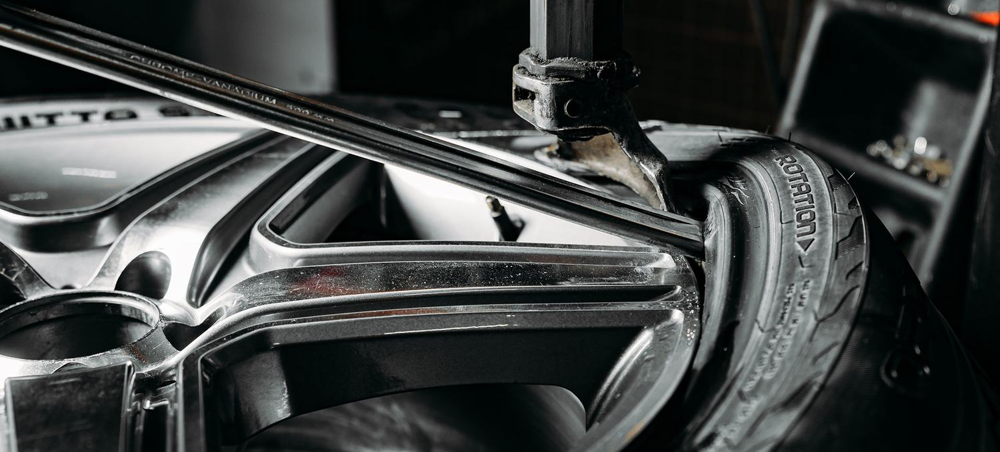
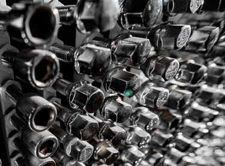
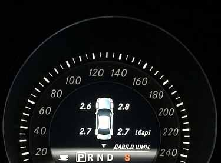
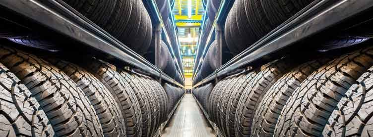
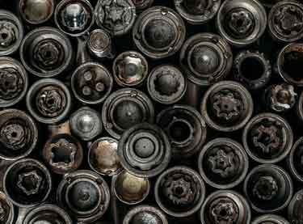

Автомото
Автомастерские в Екатеринбурге
Мы делаем авто и мото шиномонтаж. Оказываем услуги частным и юридическим лицам с оплатой по безналичному расчёту.
Четыре мастерские · с 9:00 до 21:00 без выходных
Наши услуги
 ШиномонтажДелаем шиномонтаж в Екатеринбурге для легковых авто, мототехники и коммерческого транспорта. Оказываем услуги по ремон…
ШиномонтажДелаем шиномонтаж в Екатеринбурге для легковых авто, мототехники и коммерческого транспорта. Оказываем услуги по ремон…
 Ремонт дисковПроизводим ремонт дисков в Екатринбурге любой сложности. Ремонтируем литые, кованые, комбинированные и штампованные ди…
Ремонт дисковПроизводим ремонт дисков в Екатринбурге любой сложности. Ремонтируем литые, кованые, комбинированные и штампованные ди…
 Ремонт шинДелаем ремонт боковых порезов камерных и бескамерных шин. Ремонтируем авто и мото колеса. Цена ремонта шин указана за …
Ремонт шинДелаем ремонт боковых порезов камерных и бескамерных шин. Ремонтируем авто и мото колеса. Цена ремонта шин указана за …

Колёсный крепежВсегда в наличии колесные болты и гайки, шпильки и секретки на колеса, проставки и центровочные кольца для литых и шта…
Датчики давленияПрофессионально устанавливаем датчики давления в шинах. Делаем ремонт, замену и привязку датчиков давления. Датчики да…
Хранение шинПредлагаем сезонное хранение колес в Екатеринбурге гражданам и коммерческим автопаркам. Берем на хранение колеса целик… Тормозные системыОказываем услуги по ремонту, диагностике и обслуживанию тормозных систем. Производим замену тормозных колодок и дисков…
Тормозные системыОказываем услуги по ремонту, диагностике и обслуживанию тормозных систем. Производим замену тормозных колодок и дисков…

Снятие секретокОказываем услуги по снятию секреток от 800 рублей за штуку, высверливаем сломанные болты, меняем шпильки. Стоимость ра… АвтобаферыАвтобафер — проставка из уретана, улучшающая ходовые качества автомобиля и защищающая элементы подвески. У нас вы може…
АвтобаферыАвтобафер — проставка из уретана, улучшающая ходовые качества автомобиля и защищающая элементы подвески. У нас вы може…
 Пескоструйная обработкаОказываем услуги по пескструйной обработке в Екатеринбурге. Размер камеры 5700х2600х2500 позволяет производить пескост…
Покраска дисковПорошковая покраска дисков — наша специализация. Делаем покраску автомобильных и мото дисков с покрытием лаком. Цвет м…
Замена тормозных колодокПроизводим замену тормозных колодок, датчиков износа и тормозной жидкости. В наличии задние и передние тормозные колод…
Замена тормозных дисковСтоимость работ на подъемнике не указанных в прайсе оценивается при осмотре заказа.
Проточка тормозных дисковПрофессиональная проточка тормозных дисков без снятия с автомобиля осуществляется в Екатеринбурге. Тормозной диск прот…
Спортивные тормоза JBTТормозные системы JBT отлично подходят для тюнинга спортивных и бронированных автомобилей. Мы — официальные представит…
Ремонт и замена суппортовПроизводим установку и ремонт суппортов легковых автомобилей. Ревизия тормозного суппорта включает снятие, полную разб…
Пескоструйная обработкаОказываем услуги по пескструйной обработке в Екатеринбурге. Размер камеры 5700х2600х2500 позволяет производить пескост…
Покраска дисковПорошковая покраска дисков — наша специализация. Делаем покраску автомобильных и мото дисков с покрытием лаком. Цвет м…
Замена тормозных колодокПроизводим замену тормозных колодок, датчиков износа и тормозной жидкости. В наличии задние и передние тормозные колод…
Замена тормозных дисковСтоимость работ на подъемнике не указанных в прайсе оценивается при осмотре заказа.
Проточка тормозных дисковПрофессиональная проточка тормозных дисков без снятия с автомобиля осуществляется в Екатеринбурге. Тормозной диск прот…
Спортивные тормоза JBTТормозные системы JBT отлично подходят для тюнинга спортивных и бронированных автомобилей. Мы — официальные представит…
Ремонт и замена суппортовПроизводим установку и ремонт суппортов легковых автомобилей. Ревизия тормозного суппорта включает снятие, полную разб…
Эксклюзив
Лазерная очистка металла
Гравировка на колесных дисках
Дополнительные услуги
Ремонт специальных колёс и шинКвадроциклы. Складские погрузчики. Кары.
Шиномонтаж бронированных колес PAX
Принимаем заказы из других городовЛюбые транспортные компании.
Оказываем услуги юридическим лицам по безналичному расчету
Новости и статьи
- Тихие зимние шины
- Давление в шинах — сколько качать?
- Виды протекторов шин
- Технология runflat в шинах. Что это значит?
- Маркировка шин
Тексты статей в макет не переносили — они остаются на действующем сайте.